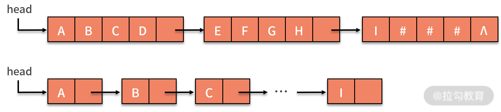
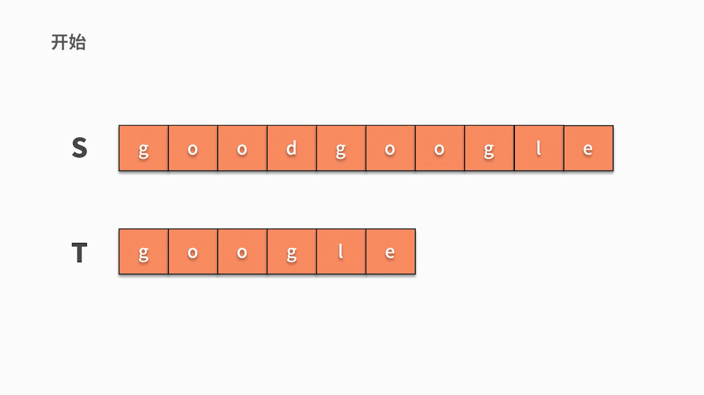

- 00 数据结构与算法，应该这样学！.md.html
- 01 复杂度：如何衡量程序运行的效率？.md.html
- 02 数据结构：将“昂贵”的时间复杂度转换成“廉价”的空间复杂度.md.html
- 03 增删查：掌握数据处理的基本操作,以不变应万变.md.html
- 04 如何完成线性表结构下的增删查？.md.html
- 05 栈：后进先出的线性表，如何实现增删查？.md.html
- 06 队列：先进先出的线性表，如何实现增删查？.md.html
- 07 数组：如何实现基于索引的查找？.md.html
- 08 字符串：如何正确回答面试中高频考察的字符串匹配算法？.md.html
- 09 树和二叉树：分支关系与层次结构下，如何有效实现增删查？.md.html
- 10 哈希表：如何利用好高效率查找的“利器”？.md.html
- 11 递归：如何利用递归求解汉诺塔问题？.md.html
- 12 分治：如何利用分治法完成数据查找？.md.html
- 13 排序：经典排序算法原理解析与优劣对比.md.html
- 14 动态规划：如何通过最优子结构，完成复杂问题求解？.md.html
- 15 定位问题才能更好地解决问题：开发前的复杂度分析与技术选型.md.html
- 16 真题案例（一）：算法思维训练.md.html
- 17 真题案例（二）：数据结构训练.md.html
- 18 真题案例（三）：力扣真题训练.md.html
- 19 真题案例（四）：大厂真题实战演练.md.html
- 20 代码之外，技术面试中你应该具备哪些软素质？.md.html
- 21 面试中如何建立全局观，快速完成优质的手写代码？.md.html
- 加餐 课后练习题详解.md.html
08 字符串：如何正确回答面试中高频考察的字符串匹配算法？
这一节我们来讲字符串和它的相关操作。
字符串是什么
字符串（string） 是由 n 个字符组成的一个有序整体（ n >= 0 ）。例如，s = "BEIJING" ，s 代表这个串的串名，BEIJING 是串的值。这里的双引号不是串的值，作用只是为了将串和其他结构区分开。字符串的逻辑结构和线性表很相似，不同之处在于字符串针对的是字符集，也就是字符串中的元素都是字符，线性表则没有这些限制。
在实际操作中，我们经常会用到一些特殊的字符串：
- 空串，指含有零个字符的串。例如，s = ""，书面中也可以直接用 Ø 表示。
- 空格串，只包含空格的串。它和空串是不一样的，空格串中是有内容的，只不过包含的是空格，且空格串中可以包含多个空格。例如，s = " "，就是包含了 3 个空格的字符串。
- 子串，串中任意连续字符组成的字符串叫作该串的子串。
- 原串通常也称为主串。例如：a = "BEI"，b = "BEIJING"，c = "BJINGEI" 。
- 对于字符串 a 和 b 来说，由于 b 中含有字符串 a ，所以可以称 a 是 b 的子串，b 是 a 的主串；
- 而对于 c 和 a 而言，虽然 c 中也含有 a 的全部字符，但不是连续的 "BEI" ，所以串 c 和 a 没有任何关系。
当要判断两个串是否相等的时候，就需要定义相等的标准了。只有两个串的串值完全相同，这两个串才相等。根据这个定义可见，即使两个字符串包含的字符完全一致，它们也不一定是相等的。例如 b = "BEIJING"，c = "BJINGEI"，则 b 和 c 并不相等。
字符串的存储结构与线性表相同，也有顺序存储和链式存储两种。
- 字符串的顺序存储结构，是用一组地址连续的存储单元来存储串中的字符序列，一般是用定长数组来实现。有些语言会在串值后面加一个不计入串长度的结束标记符，比如 \0 来表示串值的终结。
- 字符串的链式存储结构，与线性表是相似的，但由于串结构的特殊性（结构中的每个元素数据都是一个字符），如果也简单地将每个链结点存储为一个字符，就会造成很大的空间浪费。因此，一个结点可以考虑存放多个字符，如果最后一个结点未被占满时，可以使用 "#" 或其他非串值字符补全，如下图所示：

在链式存储中，每个结点设置字符数量的多少，与串的长度、可以占用的存储空间以及程序实现的功能相关。
- 如果字符串中包含的数据量很大，但是可用的存储空间有限，那么就需要提高空间利用率，相应地减少结点数量。
- 而如果程序中需要大量地插入或者删除数据，如果每个节点包含的字符过多，操作字符就会变得很麻烦，为实现功能增加了障碍。
因此，串的链式存储结构除了在连接串与串操作时有一定的方便之外，总的来说，不如顺序存储灵活，在性能方面也不如顺序存储结构好。
字符串的基本操作
字符串和线性表的操作很相似，但由于字符串针对的是字符集，所有元素都是字符，因此字符串的基本操作与线性表有很大差别。线性表更关注的是单个元素的操作，比如增删查一个元素，而字符串中更多关注的是查找子串的位置、替换等操作。接下来我们以顺序存储为例，详细介绍一下字符串对于另一个字符串的增删查操作。
字符串的新增操作
字符串的新增操作和数组非常相似，都牵涉对插入字符串之后字符的挪移操作，所以时间复杂度是 O(n)。
例如，在字符串 s1 = "123456" 的正中间插入 s2 = "abc"，则需要让 s1 中的 "456" 向后挪移 3 个字符的位置，再让 s2 的 "abc" 插入进来。很显然，挪移的操作时间复杂度是 O(n)。不过，对于特殊的插入操作时间复杂度也可以降低为 O(1)。这就是在 s1 的最后插入 s2，也叫作字符串的连接，最终得到 "123456abc"。
字符串的删除操作
字符串的删除操作和数组同样非常相似，也可能会牵涉删除字符串后字符的挪移操作，所以时间复杂度是 O(n)。
例如，在字符串 s1 = "123456" 的正中间删除两个字符 "34"，则需要删除 "34" 并让 s1 中的 "56" 向前挪移 2 个字符的位置。很显然，挪移的操作时间复杂度是 O(n)。不过，对于特殊的插入操作时间复杂度也可以降低为 O(1)。这就是在 s1 的最后删除若干个字符，不牵涉任何字符的挪移。
字符串的查找操作
字符串的查找操作，是反映工程师对字符串理解深度的高频考点，这里需要你格外注意。
例如，字符串 s = "goodgoogle"，判断字符串 t = "google" 在 s 中是否存在。需要注意的是，如果字符串 t 的每个字符都在 s 中出现过，这并不能证明字符串 t 在 s 中出现了。当 t = "dog" 时，那么字符 "d"、"o"、"g" 都在 s 中出现过，但他们并不连在一起。
那么我们如何判断一个子串是否在字符串中出现过呢？这个问题也被称作子串查找或字符串匹配，接下来我们来重点分析。
子串查找（字符串匹配）
首先，我们来定义两个概念，主串和模式串。我们在字符串 A 中查找字符串 B，则 A 就是主串，B 就是模式串。我们把主串的长度记为 n，模式串长度记为 m。由于是在主串中查找模式串，因此，主串的长度肯定比模式串长，n>m。因此，字符串匹配算法的时间复杂度就是 n 和 m 的函数。
假设要从主串 s = "goodgoogle" 中找到 t = "google" 子串。根据我们的思考逻辑，则有：
- 首先，我们从主串 s 第 1 位开始，判断 s 的第 1 个字符是否与 t 的第 1 个字符相等。
- 如果不相等，则继续判断主串的第 2 个字符是否与 t 的第1 个字符相等。直到在 s 中找到与 t 第一个字符相等的字符时，然后开始判断它之后的字符是否仍然与 t 的后续字符相等。
- 如果持续相等直到 t 的最后一个字符，则匹配成功。
- 如果发现一个不等的字符，则重新回到前面的步骤中，查找 s 中是否有字符与 t 的第一个字符相等。
- 如下图所示，s 的第1 个字符和 t 的第 1 个字符相等，则开始匹配后续。直到发现前三个字母都匹配成功，但 s 的第 4 个字母匹配失败，则回到主串继续寻找和 t 的第一个字符相等的字符。
- 如下图所示，这时我们发现主串 s 第 5 位开始相等，并且随后的 6 个字母全匹配成功，则找到结果。

这种匹配算法需要从主串中找到跟模式串的第 1 个字符相等的位置，然后再去匹配后续字符是否与模式串相等。显然，从实现的角度来看，需要两层的循环。第一层循环，去查找第一个字符相等的位置，第二层循环基于此去匹配后续字符是否相等。因此，这种匹配算法的时间复杂度为 O(nm)。其代码如下：
public void s1() {
String s = "goodgoogle";
String t = "google";
int isfind = 0;
for (int i = 0; i < s.length() - t.length() + 1; i++) {
if (s.charAt(i) == t.charAt(0)) {
int jc = 0;
for (int j = 0; j < t.length(); j++) {
if (s.charAt(i + j) != t.charAt(j)) {
break;
}
jc = j;
}
if (jc == t.length() - 1) {
isfind = 1;
}
}
}
System.out.println(isfind);
}
字符串匹配算法的案例
最后我们给出一道面试中常见的高频题目，这也是对字符串匹配算法进行拓展，从而衍生出的问题，即查找出两个字符串的最大公共字串。
假设有且仅有 1 个最大公共子串。比如，输入 a = "13452439"， b = "123456"。由于字符串 "345" 同时在 a 和 b 中出现，且是同时出现在 a 和 b 中的最长子串。因此输出 "345"。
对于这个问题其实可以用动态规划的方法来解决，关于动态规划，我们会在后续的课程会讲到，所以在这里我们沿用前面的匹配算法。
假设字符串 a 的长度为 n，字符串 b 的长度为 m，可见时间复杂度是 n 和 m 的函数。
- 首先，你需要对于字符串 a 和 b 找到第一个共同出现的字符，这跟前面讲到的匹配算法在主串中查找第一个模式串字符一样。
- 然后，一旦找到了第一个匹配的字符之后，就可以同时在 a 和 b 中继续匹配它后续的字符是否相等。这样 a 和 b 中每个互相匹配的字串都会被访问一遍。全局还要维护一个最长子串及其长度的变量，就可以完成了。
从代码结构来看，第一步需要两层的循环去查找共同出现的字符，这就是 O(nm)。一旦找到了共同出现的字符之后，还需要再继续查找共同出现的字符串，这也就是又嵌套了一层循环。可见最终的时间复杂度是 O(nmm)，即 O(nm²)。代码如下：
public void s2() {
String a = "123456";
String b = "13452439";
String maxSubStr = "";
int max_len = 0;
for (int i = 0; i < a.length(); i++) {
for (int j = 0; j < b.length(); j++){
if (a.charAt(i) == b.charAt(j)){
for (int m=i, n=j; m<a.length()&&n<b.length(); m++,n++) {
if (a.charAt(m) != b.charAt(n)){
break;
}
if (max_len < m-i+1){
max_len = m-i+1;
maxSubStr = a.substring(i, m+1);
}
}
}
}
}
System.out.println(maxSubStr);
}
总结
这节课我们介绍了字符串匹配算法，它在平时代码编写中都比较常用。
字符串的逻辑结构和线性表极为相似，区别仅在于串的数据对象约束为字符集。但是，字符串的基本操作和线性表有很大差别：
- 在线性表的基本操作中，大多以“单个元素”作为操作对象；
- 在字符串的基本操作中，通常以“串的整体”作为操作对象；
- 字符串的增删操作和数组很像，复杂度也与之一样。但字符串的查找操作就复杂多了，它是参加面试、笔试常常被考察的内容。
练习题
最后我们给出一道练习题。给定一个字符串，逐个翻转字符串中的每个单词。例如，输入: "the sky is blue"，输出: "blue is sky the"。